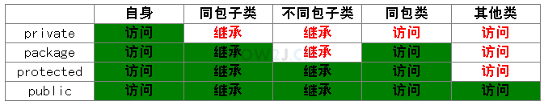

原文连接:https://www.cnblogs.com/xmdykf/p/11444277.html
类和对象
一，引用
即 创建类的实例 ==> 对象
new Hero(); 代表创建了一个 Hero 对象，但是却无法访问它，所以需要引用它
Hero hero = new Hero();
h 是的变量类型是 Hero 类，又称 引用，在 C++ 中 经常以 &h = Hero(); 来做引用
当然，可以多个引用指向一个对象，就好像贴标签似的，一个引用指向多个对象，但是往往后者会替代前者，毕竟将标签撕下，并贴在了另一个上面
二、继承
语法 =>
public class student extends People{}然后，student 就 具有了 People类中的部分属性和方法（具体引用部分见 访问修饰符）
三、方法重载
重载的条件 =>
1. 方法名一样，参数个数一样，部分参数类型不一样, 返回类型一样
2. 方法名一样，参数个数不一样, 返回类型一样
3. 方法名一样， 参数一样, 返回类型不一样,
四、构造方法
顾名思义，就是通过类创建对象时，调用的方法，实例化一个对象时，必然调用构造方法
语法 =>
public Hero(){}补充 => 构造方法也是可以有参的，即 构造方法可以 重载
五、this 关键字
this 代表当前对象，也就是可以通过 this 关键字访问 对象的属性
当然，要在一个构造方法中，调用另一个构造方法，可以使用 this()


package packet;
public class Four_this {
String name;
float hp;
float armor;
int moveSpeed;
public void addSpeed(int speed)
{
this.moveSpeed += speed;
}
public Four_this(String name, float hp)
{
this.name = name;
this.hp = hp;
}
public Four_this(String name, float hp, float armor, int moveSpeed)
{
this(name, hp); // 通过this 调用其他的构造方法
this.armor = armor; // 通过 this 调用属性
this.moveSpeed = moveSpeed;
this.addSpeed(10);
}
public static void main(String[] args) {
Four_this four = new Four_this("Tom", 200, 300,100);
}
}
六、传参
基本类型传参，在方法内，无法修改方法外的基本类型参数
类类型（又称引用）传参，两个引用都指向了一个对象，所以可以修改 =-=
但是 如果 将 形参的引用 重新 指向一个新的对象，则无法修改
七、包
使用 同包 下的 类，则直接使用即可，前提是 开头都 有
import 所在包名;使用 不同包 下的类，则需要 import 别的包名.需要引用的类名
这样才能进行 使用
八、访问修饰符
成员函数有 四种访问修饰符
private 私有的
package/friendly/default 不写, 默认
protected 受保护的
public 公共的
关于与之相关的类与类之间的关系

问题：那什么情况该用什么修饰符？
1. 属性通常使用private封装起来
2. 方法一般使用public用于被调用
3. 会被子类继承的方法，通常使用protected
4. package用的不多，一般新手会用package,因为还不知道有修饰符这个东西
再就是作用范围最小原则
简单说，能用private就用private，不行就放大一级，用package,再不行就用protected，最后用public。 这样就能把数据尽量的封装起来，没有必要露出来的，就不用露出来了
九、类属性
当一个属性被 static 修饰的时候，就叫类属性，又叫静态属性（和 C++ 中基本一模一样）
补充 => 调用类属性时，最好使用 类名. 类属性名
十、类方法
类方法又叫 静态方法，一般创建类方法的条件是，这个方法为功能性函数，不涉及对象的属性，当然在静态方法中也调用不了对象的方法就是了（例如 random() 就是 Math 的一个功能用途的函数）
对象方法又叫实例方法，非静态方法
区别：
访问一个对象方法，必须建立在有一个对象的基础上
访问一个类方法，不需要对象的存在，直接访问即可
十一、属性初始化
对象属性初始化有三种
1. 声明该属性的时候初始化
public String name = "hello"; // 声明该属性的时候初始化2. 构造函数中初始化
3. 初始化块
public String name;
{
name = "hello" ; // 初始化块
}
三种方式的执行顺序是，1 => 3 => 2
类属性初始化方式有两种
1. 声明该属性的时候初始化
2. 静态初始化块
public static int item=8; // 声明的时候初始化
static{
item = 6; // 静态初始化块 初始化
}
十二、单例模式
单例 简单点说就是，一个类 只能创建一个实例，即一个对象，不论创建多少个，他们都是一样的，也就是只有一个
单例三元素
1. 构造方法私有化
2. 静态属性指向实例
3. public static getInstance方法，返回第二步的静态属性
有 两种 单例模式
1. 饿汉式单例模式
首先 通过 私有化 其构造方法，使得外部无法通过 new 得到 新的实例，然后 通过 public static getInstance() 方法，外部调用通过该方法获取 对象，且每次都是获取同一个对象
package packet;
// 饿汉式单例模式
public class single {
// 单例 只能被实例化一次
// 通过私有化其构造方法，使得外部无法通过new 得到新的实例
private single(){
}
// 准备一个类属性，指向一个实例化对象，因为是类属性，只有一个
private static single instance = new single();
// public static 方法，提供给调用者 获取 12行定义的对象
public static single getInstance()
{
return instance;
}
// 提供了一个public static的getInstance方法
// 这种单例模式又叫做饿汉式单例模式，无论如何都会创建一个实例
public static void main(String[] args) {
// 通过new 实例化会报错
// 只能通过 getInstance 得到对象
single g1 = single.getInstance();
single g2 = single.getInstance();
System.out.println(g1 == g2);
}
}
2. 懒汉式单例模式
懒汉式单例模式与饿汉式单例模式不同，只有在调用 getInstance 的时候，才会创建实例
1 package packet;
2 // 懒汉式单例模式
3 public class single2 {
4 // 单例 只能被实例化一次
5 // 通过私有化其构造方法，使得外部无法通过new 得到新的实例
6 private single2(){
7
8 }
9 // 准备一个类属性，用于执行一个实例化的对象，但是暂时指向null，区别于饿汉式
10 private static single2 instance;
11 // public static 方法 返回实例对象
12 public static single2 getInstance(){
13 // 第一次访问的时候，发现instance 没有指向对象，这时实例化一个对象
14 if (null == instance){
15 instance = new single2();
16 }
17 // 返回instance 指向的对象
18 return instance;
19 }
20 }
补充: 什么时候使用 饿汉式，什么时候使用懒汉式？
饿汉式是立即加载的方式，无论是否会用到这个对象，都会加载。
如果在构造方法里写了性能消耗较大，占时较久的代码，比如建立与数据库的连接，那么就会在启动的时候感觉稍微有些卡顿。
懒汉式，是延迟加载的方式，只有使用的时候才会加载。 并且有线程安全的考量
使用懒汉式，在启动的时候，会感觉到比饿汉式略快，因为并没有做对象的实例化。 但是在第一次调用的时候，会进行实例化操作，感觉上就略慢。
看业务需求，如果业务上允许有比较充分的启动和初始化时间，就使用饿汉式，否则就使用懒汉式
十三， 枚举类型
假定一个枚举类先
1 package c;
2
3 public enum Season {
4 SPRING, SUMMER, AUTUMN, WINTER
5 }
枚举 enum 是一个特殊的类，使用枚举 可以很方便的定义常量，如果要循环的得到枚举中的常量，可以使用增强型 for 循环
1 // 遍历枚举 借助增强型for循环
2 for (Season season : Season.values())
3 {
4 switch (season)
5 {
6 case SPRING:
7 System.out.println("春天");
8 break;
9 case SUMMER:
10 System.out.println("夏天");
11 break;
12 case AUTUMN:
13 System.out.println("秋天");
14 break;
15 case WINTER:
16 System.out.println("冬天");
17 break;
18
19 }
20 }且，如果要简单的获取某个枚举中的变量，可以
1 枚举类名 引用名 = 枚举类名.变量名;补充：因为枚举中的均为常量，所以一般是全大写